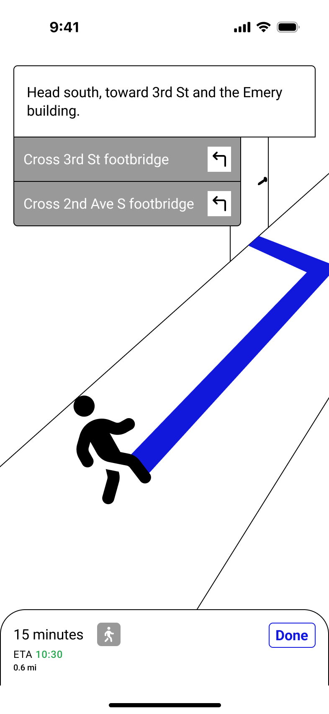
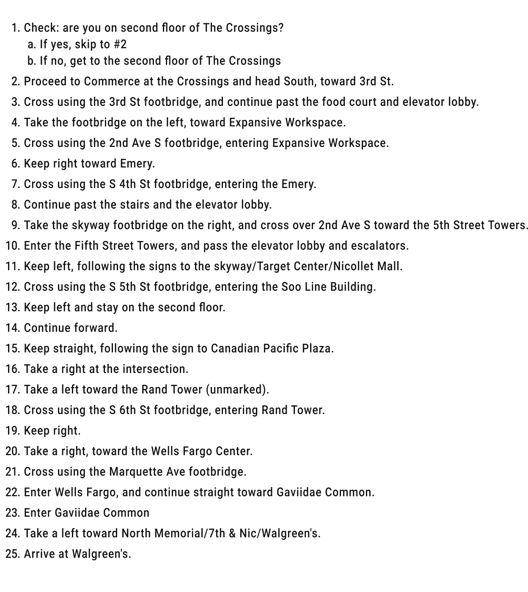
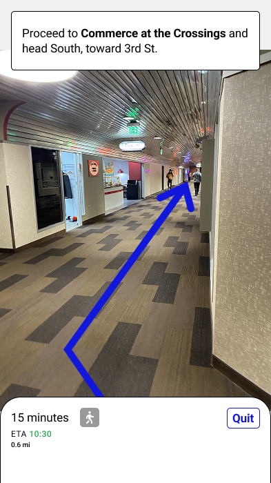
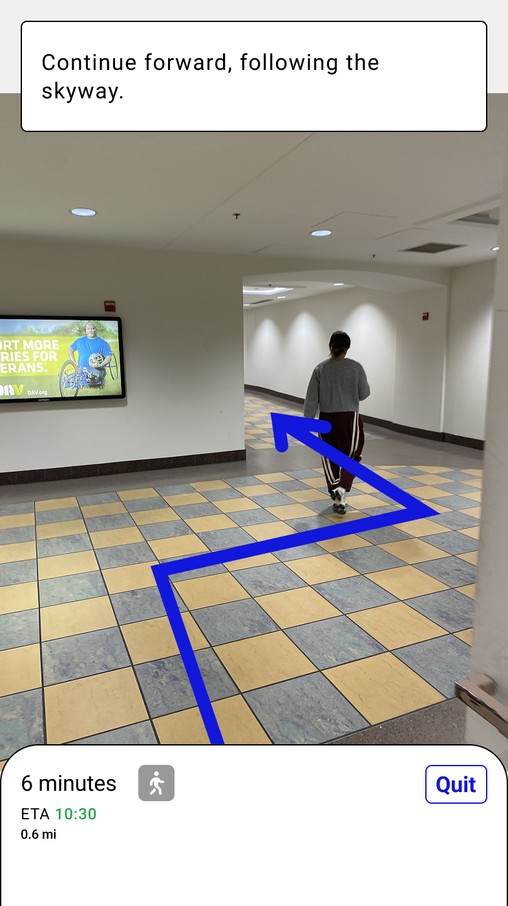
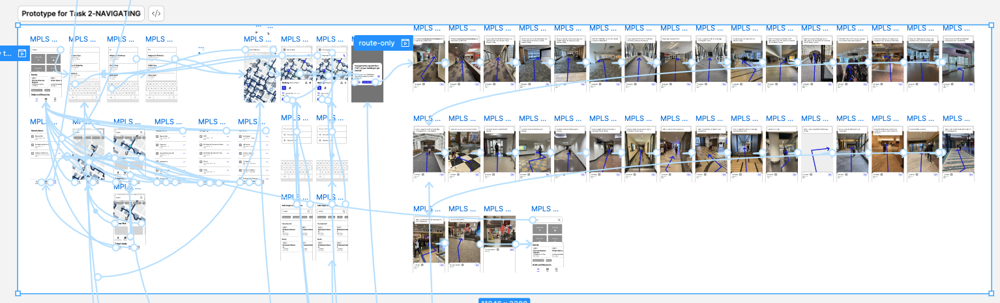

Once I finalized my research plan, and specifically the script, it identified exactly what I needed to mock-up and build into a clickable prototype based on the tasks outlined in the script.
I used Figma to make my prototypes, and to keep the work and interactions from being "too involved" or having a lot of duplicates or versions of the same pages, I created two separate prototypes–one for each research task:
- Browsing the app
- Route/navigation to Walgreen's Pharmacy
But I was getting stuck on the navigation portion of the mock-ups and prototype for a few reasons:
- I was so intent on following Google Maps's "standard" of experience, that once I got to the actual steps/instructions I was determined to illustrate each step

Figure 11. Each of the 25 steps needed in the route/navigation.
- I wasn't sure how best to display the directions:
- Written directions at the top of the page?
- "Hints" at next steps? (And if I did this, what kind of iconography would make sense, since these are hallways and atriums inside, and not necessarily clear "left turns" and "right turns"?
- A blue arrow along their "route"?
- The steps to get from The Crossings (an apartment on the Skywyay) to Walgreen's (a pharmacy on the Skyway) were at least 25 steps, and illustrating all of that would take more time than I had before my first user interview

Figure 12. Each of the 25 steps needed in the route/navigation.
In order to get my prototype working in the time I had left, I needed a quicker solution than illustrating 25 steps of the route (and 25 different interiors) "well-enough" that participants would recognize the intention of the experience for the research.
With time running down to my first interview, I really only had about 4-8 hours to deliver every step in my prototype. And I simply could not draw each of the 25 steps well enough, and digitize them, mainly because.... I'd need pictures of each step because I didn't know what each step looked like by heart anyway.
And then I realized: pictures! Of each step!
I'm not a photographer, but I do have an iPhone! And I could walk the route, and use those images for my prototype. Users would hopefully recognize they were "real" images, and I'd still be able to get feedback on what kind of imagery they expected (e.g. illustrations like Google Maps has, or this more "street-level" display)!

Figure 13. The first step in the "route" that users saw.

Figure 14. Another example of a step in the "route".
I kept all of the elements I wasn't sure would work best during route/navigation–written directions; the images of the route; and an arrow drawing your footpath–so that I could get user feedback on all of them.

Figure 15. An overview of the final prototype for task 2: route navigation, showing all of the steps needed to get through the entire route.
Figma Prototype Links:
- Browsing prototype
- Navigating to Walgreen's prototype